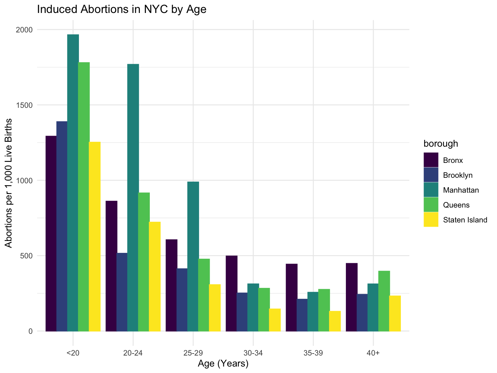
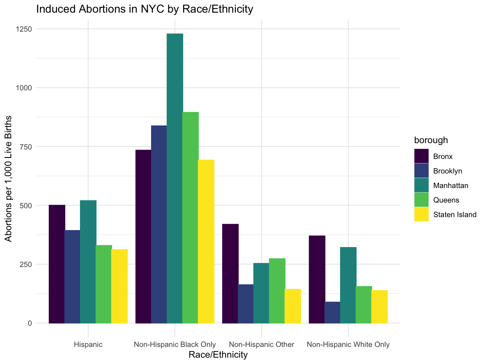
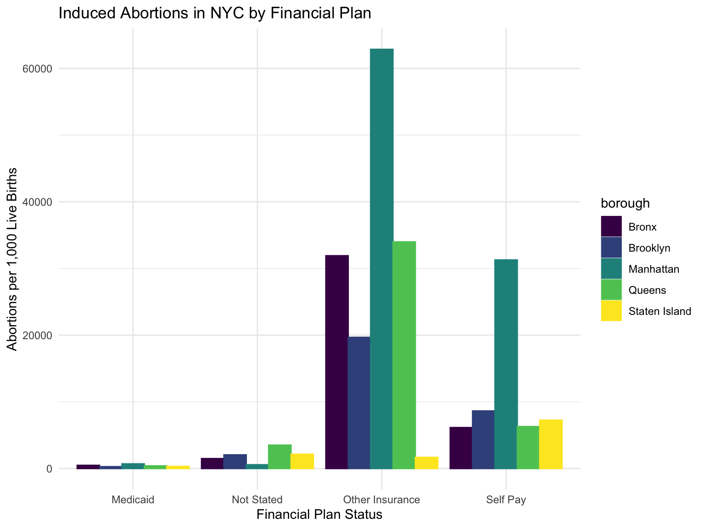

Project Report
Motivation
In 2019, many states raced to enact an unprecedented wave of bans on abortions that have severely restricted Women’s reproductive rights. These restrictions have culminated to the recent Supreme Court overturning of Roe v. Wade, a landmark supreme court case granting a Women’s right to an abortion.

Source: Guttmacher Institute
Our year of interest is 2019, which is the most recent dataset provided by New York State and final year before the COVID-19 pandemic. We will be focusing on the number of induced abortions per 1,000 live births in New York City and New York State and compare the differences across boroughs (for New York City), counties (for New York State), and between New York City and New York State. Variables we are considering are age, race/ethnicity, and financial plans (a.k.a. insurance plans). Those that are likely to be most impacted by this decision are individuals that belong to under-served and marginalized communities. We wanted to better understand disparities in abortion access.
Initial questions
Originally, we wanted to conduct a comparative analysis of abortion rates in New York and Mississippi from 2017-2020 to answer the following questions:
- Have abortion rates changed over time (2017 to 2020) in New York and Mississippi?
- What does the distribution of abortion rates between counties within New York and Mississippi look like?
- Are abortion rates different in New York compared to Mississippi while accounting for age, race/ethnicity, method, and insurance plan?
Final Research Questions
We were unable to find a comprehensive dataset that included individual level data needed to answer these questions. Therefore, we decided to focus on conducting an analysis of abortion rates in New York City and New York State in 2019. Our research questions changed to the following:
- What does the distribution of rates of abortion between boroughs
within New York City look like in 2019?
- Are abortion rates different among boroughs in New York City while accounting for age, race/ethnicity, and finance plans in 2019?
- How do abortion rates differ between New York City and New York State in 2019?
- How do abortion rates differ within regions/counties of New York
State in 2019?
- Are abortion rates different among regions/counties of New York State while accounting for age, race/ethnicity, and finance plans?
Data
Source
For this project, we will use data from Vital Statistics of New York State 2014-2019 which consists of group-level data from New York City and New York State for age, race/ethnicity, and finance plans, each being its own data set.
The data were collected from the New York State Bureau of Vital Records who maintains a registry of all births, marriages, divorces/dissolutions of marriage, deaths, induced termination of pregnancy/abortions, and fetal deaths that have occurred in New York State.
The New York City Department of Health and Mental Hygiene sends data on on live births, deaths, fetal deaths, induced terminations of pregnancy/abortions (abortion), marriages, and divorces/dissolutions of marriage recorded in New York City to the New York State Department of Health.
The New York State Department of Health receives data on live births and deaths recorded outside of New York State to residents of New York State from other states and Canada.
The geographical units are categorized as follows:
New York City includes five counties: Bronx, Kings (Brooklyn), New York (Manhattan), Queens, and Richmond (Staten Island). Each county corresponds to a borough.
New York State encompasses 10 regions: Central New York, Eastern Adirondacks, Western Adirondacks, Saratoga, Finger Lakes, Western New York, Hudson Valley, Westchester/Rockland, Long Island, and New York City.
New York State encompasses 62 counties, including five from New York City.
From the Vital Statistics of New York State 2019, we will use data from the Induced Abortions and Live Births section in order to find information on finance plans.
Data Scraping and Cleaning
We first imported the data sets representing abortion rates from the Vital Statistics of New York State 2019 webpage. We cleaned and merged the data appropriately to create a final master spreadsheet, which we will be pulling from for each of our analyses.
For the finance plans data set, we imported the number of induced abortion and number of live births in order to calculate the abortion rates manually. The equation we used is as follows:
\[Abortion\ Rate\ per\ 1000\ Live\ Births\ = \frac{Count}{Number\ of\ Live\ Births} \times 1000\]
We renamed variable names for the different counties in New York City to the name of the respective boroughs. Final variable names in our dataset for New York City include:
ManhattanBronxBrooklynQueensStaten Island
From the same dataset, we included New York State total,
New York City total and any county with released abortion
rate data. Therefore, the dataset includes the following variables: New
York State, New York City, Bronx, Brooklyn, Manhattan, Queens, Staten
Island, Albany, Allegany, Broome, Cattaraugus, Cayuga, Chautauqua,
Chemung, Chenango, Clinton, Columbia, Cortland, Delaware, Dutchess,
Erie, Essex/Hamilton, Franklin, Fulton, Greene, Herkimer, Jefferson,
Lewis, Livingston, Madison, Monroe, Montgomery, Nassau, Niagara, Oneida,
Onondaga, Ontario, Orange, Orleans, Oswego, Otsego, Putnam, Rensselaer,
Rockland, St Lawrence, Saratoga, Schenectady, Schoharie, Schuyler,
Seneca, Steuben, Suffolk, Sullivan, Tioga, Tompkins, Ulster, Warren,
Washington, Wayne, Westchesterto analyze data for New York state.
One note is that Essex County and Hamilton County data are combined
in the dataset provided by New York state. Therefore,
Essex/Hamilton is used as a combined variable, rather than
separate variables.
Counties were recoded into regions based on categories set by New
York State using transform or case_when. Some
counties had very few abortion numbers, which would not provide a
sufficient sample size when stratifying based on our covariates. As a
result, the categorizing of the regions will ensure a sufficient sample
size for some of the analyses.
The final regions included in the dataset for New York State includes:
Central New YorkEastern AdirondacksWestern AdirondacksSaratogaFinger LakesWestern New YorkHudson ValleyWestchester/RocklandLong IslandNew York City
The regions were created based on this website
Specific data cleaning processes for the covariates are listed below.
Age
Age was categorized as follows:
age_less_20age_20_24age_25_29age_30_34age_35_39age_plus_40
Race/Ethnicity
Race/Ethnicity was categorized as follows:
Non-Hispanic WhiteNon-Hispanic BlackNon-Hispanic OthersHispanic
Ethnicity is distinguished from race and is based on the ethnicity of the mother. Ethnicity distinguishes individuals of Spanish origin regardless of race. Race was self-reported.
Financial Plan Status
The final variable names include:
MedicaidOther_insuranceself_paynot stated
The technical notes in the dataset did not specify which plans were
included under the other_insurance category.
After individual datasets were tidied, they were merged into a final dataset which was then saved and exported to our project repository. These steps were necessary to ensure that the code was readable and reproducible.
Final Dataset
Here is our final, cleaned and tidied dataset:
| Borough | Region | Total | <20 | 20-24 | 25-29 | 30-34 | 35-39 | 40+ | Non-Hipanic Total | Non-Hispanic White | Non-Hispanic Black | Non-Hispanic Other | Hispanic Total | Hispanic White | Hispanic Black | Medicaid | Self-Pay | Other Insurance | Not Stated |
|---|---|---|---|---|---|---|---|---|---|---|---|---|---|---|---|---|---|---|---|
| New York State | NA | 336.5 | 1012.9 | 588.8 | 378.4 | 214.6 | 203.4 | 269.1 | 334.1 | 142.9 | 758.5 | 202.1 | 344.4 | 189.0 | 534.6 | 325.7 | 3755.0 | 10322.6 | 3252.4 |
| New York City | NA | 450.5 | 1491.4 | 792.2 | 526.8 | 302.8 | 264.2 | 323.0 | 459.4 | 165.6 | 851.7 | 243.2 | 428.1 | 167.7 | 570.6 | 401.7 | 8801.2 | 19924.4 | 1477.9 |
| Bronx | New York City | 623.3 | 1291.9 | 860.8 | 605.0 | 497.1 | 443.1 | 447.8 | 786.6 | 369.8 | 734.3 | 419.3 | 500.2 | 172.2 | 684.6 | 488.5 | 6150.9 | 31915.1 | 1498.1 |
| Brooklyn | New York City | 351.7 | 1388.4 | 515.3 | 412.6 | 251.8 | 210.5 | 242.8 | 343.7 | 88.6 | 837.7 | 162.5 | 393.1 | 214.2 | 432.0 | 287.0 | 8644.4 | 19678.4 | 2058.8 |
| Manhattan | New York City | 537.5 | 1964.9 | 1768.6 | 988.1 | 312.2 | 256.5 | 312.0 | 542.9 | 320.8 | 1228.3 | 253.2 | 519.8 | 220.6 | 601.4 | 708.4 | 31285.7 | 62864.4 | 576.6 |
| Queens | New York City | 445.7 | 1780.1 | 915.6 | 476.5 | 282.9 | 275.7 | 396.4 | 494.2 | 155.0 | 895.1 | 273.1 | 329.4 | 80.4 | 287.4 | 408.6 | 6299.2 | 33991.0 | 3519.5 |
| Staten Island | New York City | 275.6 | 1252.2 | 721.7 | 307.0 | 145.7 | 130.0 | 231.9 | 264.7 | 137.9 | 692.2 | 142.9 | 311.7 | 377.9 | 311.8 | 324.0 | 7259.3 | 1677.0 | 2142.9 |
| Albany | Capital/Saratoga | 379.0 | 1346.9 | 825.5 | 394.5 | 200.4 | 215.2 | 381.0 | 376.4 | 257.0 | 919.6 | 140.6 | 402.7 | 327.9 | 569.2 | 594.3 | 2200.0 | 43750.0 | 11250.0 |
| Allegany | Western New York | 137.5 | 357.1 | 214.3 | 61.2 | 107.1 | 109.1 | 166.7 | 140.3 | 124.4 | NA | 133.3 | 96.8 | 0.0 | NA | 114.2 | 15.6 | 2583.3 | 208.3 |
| Broome | Central New York | 307.7 | 821.1 | 463.7 | 312.2 | 183.2 | 187.8 | 172.4 | 296.6 | 221.9 | 803.9 | 152.9 | 482.8 | 1000.0 | 272.7 | 342.0 | 3166.7 | 3800.0 | 36333.3 |
| Cattaraugus | Western New York | 107.9 | 236.8 | 82.6 | 114.9 | 107.0 | 86.0 | 187.5 | 116.8 | 91.5 | 625.0 | 13.3 | 41.2 | 0.0 | 0.0 | 107.8 | 342.9 | 571.4 | 36.6 |
| Cayuga | Central New York | 152.9 | 620.7 | 186.7 | 150.6 | 95.2 | 76.9 | 150.0 | 147.7 | 99.2 | 500.0 | 218.8 | 243.9 | 384.6 | NA | 175.7 | 300.0 | 4333.3 | 5000.0 |
| Chautauqua | Western New York | 95.4 | 161.6 | 95.9 | 92.0 | 80.3 | 97.7 | 60.6 | 101.2 | 65.9 | 333.3 | 137.3 | 64.8 | 20.1 | NA | 158.9 | 310.3 | 653.8 | 109.6 |
| Chemung | Finger Lakes | 281.9 | 615.4 | 281.3 | 247.4 | 182.6 | 404.5 | 666.7 | 290.1 | 252.3 | 929.8 | 94.3 | 102.6 | 43.5 | NA | 391.9 | 800.0 | 2523.8 | 8000.0 |
| Chenango | Central New York | 195.3 | 750.0 | 153.8 | 134.5 | 190.0 | 192.3 | 571.4 | 203.5 | 163.6 | NA | 300.0 | 0.0 | 0.0 | 0.0 | 197.7 | 1800.0 | 2200.0 | 2111.1 |
| Clinton | Eastern Adirondacks | 97.0 | 370.4 | 154.4 | 84.6 | 44.6 | 48.8 | 266.7 | 98.3 | 85.2 | 2000.0 | 133.3 | 50.0 | 71.4 | 0.0 | 111.1 | 125.0 | 17000.0 | 666.7 |
| Columbia | Capital/Saratoga | 152.4 | 304.3 | 188.4 | 206.7 | 114.3 | 51.9 | 100.0 | 163.2 | 147.1 | 521.7 | 88.2 | 60.0 | 130.4 | 0.0 | 153.8 | 1000.0 | 15000.0 | 250.0 |
| Cortland | Central New York | 157.4 | 478.3 | 191.9 | 111.9 | 118.1 | 113.2 | 500.0 | 162.7 | 164.5 | 222.2 | 0.0 | 74.1 | 0.0 | 0.0 | 203.4 | 1000.0 | 2600.0 | 583.3 |
| Delaware | Hudson Valley | 252.1 | 312.5 | 306.7 | 190.5 | 212.1 | 340.9 | 400.0 | 225.2 | 172.0 | 1714.3 | 83.3 | 812.5 | 400.0 | NA | 191.9 | 4000.0 | 19000.0 | 14000.0 |
| Dutchess | Hudson Valley | 297.9 | 1166.7 | 732.6 | 317.9 | 175.8 | 146.6 | 239.3 | 302.0 | 195.3 | 842.8 | 181.0 | 281.1 | 215.2 | 916.7 | 210.2 | 2263.2 | 8238.1 | 39666.7 |
| Erie | Western New York | 337.6 | 750.6 | 594.5 | 375.5 | 191.1 | 215.9 | 303.9 | 325.8 | 128.0 | 336.2 | 61.6 | 467.2 | 237.8 | 338.2 | 386.0 | 2945.9 | 1252.5 | 8818.2 |
| Essex/Hamilton | Eastern Adirondacks | 55.4 | NA | 106.1 | 27.5 | 48.1 | 19.2 | 142.9 | 53.6 | 46.0 | NA | 0.0 | NA | NA | 0.0 | 87.6 | 200.0 | 3000.0 | 76.9 |
| Franklin | Eastern Adirondacks | 146.0 | 500.0 | 170.0 | 168.1 | 52.2 | 106.4 | 0.0 | 150.0 | 142.9 | NA | 212.1 | 0.0 | 0.0 | 0.0 | 346.2 | 0.0 | 300.0 | 357.1 |
| Fulton | Capital/Saratoga | 213.7 | 372.1 | 257.6 | 183.0 | 137.9 | 192.3 | 357.1 | 204.5 | 200.0 | NA | 153.8 | 500.0 | 454.5 | 0.0 | 148.5 | 2000.0 | 3000.0 | NA |
| Greene | Capital/Saratoga | 158.3 | 357.1 | 245.3 | 150.8 | 70.7 | 125.0 | 500.0 | 158.9 | 145.7 | 857.1 | 83.3 | 153.8 | 150.0 | 0.0 | 134.5 | 5000.0 | NA | 333.3 |
| Herkimer | Western Adirondacks | 169.3 | 481.5 | 201.6 | 169.1 | 98.3 | 208.3 | 0.0 | 170.5 | 37.3 | NA | 0.0 | 136.4 | 66.7 | NA | 173.7 | 74.1 | 12000.0 | 666.7 |
| Jefferson | Western Adirondacks | 126.5 | 270.0 | 141.6 | 122.2 | 90.7 | 83.8 | 87.0 | 132.1 | 106.1 | 226.0 | 47.6 | 87.7 | 75.0 | 62.5 | 230.5 | 714.3 | 3727.3 | 1333.3 |
| Lewis | Western Adirondacks | 103.3 | 200.0 | 208.3 | 92.6 | 39.5 | 0.0 | NA | 102.0 | 65.3 | NA | 0.0 | NA | 0.0 | 0.0 | 132.8 | 80.0 | 857.1 | 1000.0 |
| Livingston | Finger Lakes | 118.0 | 300.0 | 304.3 | 96.0 | 47.6 | 131.0 | 0.0 | 120.6 | 91.1 | 0.0 | 187.5 | 81.1 | 41.7 | 0.0 | 136.2 | 0.0 | 6000.0 | 3000.0 |
| Madison | Central New York | 140.6 | 500.0 | 195.7 | 155.9 | 44.8 | 129.0 | 90.9 | 147.9 | 40.4 | NA | 43.5 | 0.0 | 0.0 | 0.0 | 196.7 | 555.6 | 4000.0 | 294.1 |
| Monroe | Finger Lakes | 320.9 | 644.7 | 526.9 | 388.4 | 196.1 | 193.3 | 306.5 | 326.5 | 140.8 | 590.3 | 159.0 | 282.6 | 361.8 | 461.5 | 274.7 | 673.1 | 6000.0 | 38333.3 |
| Montgomery | Capital/Saratoga | 203.4 | 482.8 | 315.8 | 139.8 | 130.7 | 209.7 | 136.4 | 183.0 | 151.7 | 750.0 | 41.7 | 277.8 | 157.1 | NA | 194.8 | 73.2 | 3600.0 | 333.3 |
| Nassau | Long Island | 215.9 | 1153.5 | 741.3 | 287.4 | 113.3 | 97.5 | 162.1 | 215.8 | 95.9 | 707.0 | 133.2 | 216.2 | 36.4 | 243.5 | 211.3 | 10473.0 | 9232.8 | 15666.7 |
| Niagara | Western New York | 235.4 | 569.9 | 392.3 | 217.0 | 136.1 | 191.6 | 207.5 | 228.2 | 157.2 | 605.5 | 120.0 | 363.6 | 280.7 | 250.0 | 272.6 | 1384.6 | 571.4 | 7500.0 |
| Oneida | Western Adirondacks | 243.5 | 698.3 | 367.4 | 211.2 | 152.8 | 162.3 | 196.7 | 264.8 | 37.7 | 89.3 | 37.0 | 30.7 | 13.4 | 41.7 | 299.3 | 321.4 | 4391.3 | 2333.3 |
| Onondaga | Central New York | 312.9 | 910.0 | 527.0 | 311.2 | 180.4 | 193.0 | 245.5 | 319.0 | 148.6 | 601.6 | 86.7 | 242.6 | 276.3 | 404.8 | 352.6 | 1571.4 | 8642.9 | 120000.0 |
| Ontario | Finger Lakes | 167.0 | 640.0 | 285.7 | 154.7 | 83.3 | 178.6 | 100.0 | 165.7 | 127.2 | 478.3 | 105.3 | 177.6 | 171.1 | 0.0 | 196.4 | 23.8 | 8000.0 | 17500.0 |
| Orange | Hudson Valley | 187.8 | 550.3 | 266.1 | 186.4 | 126.7 | 140.4 | 169.8 | 170.3 | 108.3 | 592.6 | 224.3 | 245.3 | 185.6 | 631.6 | 146.7 | 3772.7 | 1773.3 | 3272.7 |
| Orleans | Western New York | 78.0 | 260.9 | 109.9 | 36.0 | 63.6 | 102.0 | 0.0 | 76.4 | 54.7 | 153.8 | 0.0 | 117.6 | 0.0 | 0.0 | 74.6 | 74.1 | 187.5 | NA |
| Oswego | Western Adirondacks | 110.2 | 246.4 | 156.6 | 67.4 | 109.0 | 85.3 | 133.3 | 111.8 | 63.1 | 111.1 | 83.3 | 68.2 | 50.0 | 0.0 | 127.8 | 83.3 | 1357.1 | 2818.2 |
| Otsego | Central New York | 301.6 | 684.2 | 522.7 | 176.5 | 233.9 | 213.1 | 538.5 | 313.7 | 259.0 | 833.3 | 416.7 | 151.5 | 166.7 | NA | 336.8 | 555.6 | 28000.0 | 809.5 |
| Putnam | Hudson Valley | 112.9 | 1000.0 | 262.3 | 158.8 | 62.3 | 93.1 | 76.9 | 112.3 | 97.8 | 111.1 | 142.9 | 114.5 | 150.0 | NA | 107.3 | 4666.7 | 6750.0 | NA |
| Rensselaer | Capital/Saratoga | 336.2 | 821.9 | 619.0 | 343.2 | 199.3 | 194.6 | 254.9 | 318.9 | 235.1 | 908.6 | 187.0 | 544.7 | 338.0 | 1136.4 | 612.5 | 7000.0 | 34000.0 | 8000.0 |
| Rockland | Westchester/Rockland | 81.1 | 382.1 | 100.4 | 95.2 | 51.5 | 58.4 | 55.7 | 69.2 | 32.3 | 354.8 | 66.9 | 134.6 | 338.6 | 333.3 | 38.3 | 1253.7 | 3781.2 | 20600.0 |
| St Lawrence | Western Adirondacks | 118.1 | 490.2 | 118.9 | 122.2 | 84.6 | 9.1 | 130.4 | 117.5 | 106.4 | 1500.0 | 131.6 | 127.0 | 115.4 | 0.0 | 200.0 | 51.7 | 307.7 | 76.9 |
| Saratoga | Capital/Saratoga | 165.7 | 725.0 | 447.2 | 188.9 | 96.2 | 72.5 | 232.6 | 163.7 | 157.0 | 333.3 | 98.6 | 211.8 | 125.0 | NA | 259.0 | 1083.3 | 13600.0 | 5250.0 |
| Schenectady | Capital/Saratoga | 412.0 | 1024.1 | 648.0 | 389.5 | 226.9 | 330.6 | 583.3 | 387.8 | 264.0 | 828.5 | 365.4 | 660.1 | 894.7 | 2666.7 | 347.9 | 2200.0 | 40000.0 | 6000.0 |
| Schoharie | Capital/Saratoga | 256.1 | 750.0 | 244.4 | 250.0 | 131.6 | 296.3 | 500.0 | 260.7 | 250.0 | NA | NA | 166.7 | 100.0 | 0.0 | 258.1 | 0.0 | NA | 1000.0 |
| Schuyler | Finger Lakes | 90.4 | 111.1 | 172.4 | 120.0 | 20.0 | 43.5 | 200.0 | 90.9 | 75.5 | NA | 0.0 | 0.0 | 0.0 | 0.0 | 28.6 | 250.0 | 1250.0 | NA |
| Seneca | Finger Lakes | 112.9 | 352.9 | 123.7 | 114.3 | 51.0 | 162.2 | 0.0 | 112.7 | 87.3 | NA | 272.7 | 117.6 | 111.1 | 0.0 | 146.7 | 24.7 | 5000.0 | 1600.0 |
| Steuben | Finger Lakes | 181.5 | 600.0 | 222.7 | 138.6 | 125.5 | 200.0 | 142.9 | 179.3 | 160.6 | 1444.4 | 166.7 | 250.0 | 173.9 | 0.0 | 131.1 | 35.3 | 1303.4 | 2600.0 |
| Suffolk | Long Island | 177.3 | 579.9 | 450.4 | 206.1 | 95.7 | 92.9 | 140.6 | 196.9 | 146.9 | 537.5 | 90.7 | 138.6 | 194.5 | 252.5 | 144.2 | 4610.2 | 11819.7 | 6040.0 |
| Sullivan | Hudson Valley | 286.2 | 755.6 | 350.3 | 237.5 | 260.1 | 204.7 | 204.5 | 269.2 | 224.3 | 581.8 | 333.3 | 349.5 | 600.0 | 375.0 | 246.5 | 10500.0 | 3285.7 | 4000.0 |
| Tioga | Central New York | 94.9 | 304.3 | 122.6 | 85.4 | 42.0 | 90.9 | 142.9 | 90.9 | 78.3 | NA | 76.9 | 250.0 | 428.6 | 0.0 | 208.3 | 125.0 | 1500.0 | 1333.3 |
| Tompkins | Central New York | 184.0 | 730.8 | 430.0 | 183.7 | 75.7 | 115.9 | 128.2 | 175.7 | 152.1 | 464.3 | 126.3 | 288.5 | 275.9 | NA | 263.0 | 300.0 | 6500.0 | 1666.7 |
| Ulster | Hudson Valley | 300.0 | 836.1 | 464.8 | 336.3 | 184.4 | 187.3 | 271.4 | 292.4 | 251.4 | 795.5 | 214.3 | 338.6 | 388.9 | 307.7 | 202.0 | 2222.2 | 4476.2 | 4285.7 |
| Warren | Capital/Saratoga | 232.6 | 875.0 | 431.8 | 195.4 | 117.0 | 183.1 | 384.6 | 224.8 | 215.9 | 1200.0 | 150.0 | 470.6 | 307.7 | NA | 193.1 | 3000.0 | 7250.0 | 2000.0 |
| Washington | Capital/Saratoga | 177.4 | 285.7 | 230.8 | 175.8 | 114.1 | 140.4 | 333.3 | 175.8 | 167.0 | 0.0 | 250.0 | 250.0 | 100.0 | 0.0 | 105.6 | 500.0 | 3000.0 | 6000.0 |
| Wayne | Finger Lakes | 182.6 | 461.5 | 188.6 | 180.3 | 132.2 | 169.8 | 250.0 | 181.7 | 123.9 | 842.1 | 111.1 | 194.0 | 108.7 | 0.0 | 156.7 | 244.4 | 5000.0 | NA |
| Westchester | Westchester/Rockland | 329.2 | 1307.7 | 911.9 | 456.2 | 188.7 | 169.6 | 240.8 | 360.6 | 140.2 | 817.1 | 121.7 | 273.5 | 533.6 | 353.7 | 301.2 | 13181.8 | 10086.4 | 59066.7 |
Exploratory analysis
Our exploratory analysis was split into two categories - New York State and New York City. We analyzed how
abortion rates may differ across our covariates (Age, Race/Ethnicity and
Financial Plan Status), using plots created via plotly. All
plots seen here have been made using ggplot. For
interactive plots, head over to the individual exploratory analyses
pages linked above!
NYC Analysis Results:
Age:

From the bar plots, it is evident that those who are less than 20
years of age have the highest abortion rates across the boroughs in New
York City in 2019. These rates decrease as age categories increase. When
comparing between boroughs, Manhattan had the highest abortion rates in
categories <20 and 25-29. Staten Island had
the lowest abortion rates overall, except for category
20-24. The highest abortion rate across all boroughs and
age categories was for Manhattan for < 20 with 1,964.9
induced abortions per 1,000 live births. The lowest abortion rate across
all boroughs and age categories was in Staten Island for
35-39 with 130 induced abortions per 1,000 live births.
Race/Ethnicity:

From the bar plots, it is evident that those who identified as Non-Hispanic Black had the highest abortion rates across all boroughs in NYC. Among those who identified as Non-Hispanic Black, abortion rates were highest in Manhattan with 1,228.3 induced abortions per 1,000 live births. Those who identified as Non-Hispanic White and Non-Hispanic Other had some of the lowest abortion rates in NYC. The lowest rates across all boroughs and race groups was for those who identified as Non-Hispanic White and lived in Brooklyn with a rates of 88.6 induced abortions per 1,000 live births.
Financial Plan Status:

From the bar plots, those who were categorized as having Other
Insurance had the highest abortion rates across all financial plans in
NYC with a rate of 62.86k induced abortions per 1000 live births. When
calculating abortion rates for financial plans, we manually calculated
these rates from (induced abortions/ live births)*1000 as they were not
provided like in other data sets. An noticeable trend is that those who
have induced abortions and those who give births tend to use different
insurance plans. People who give birth are unlikely to use
Other Insurance in comparison to those who have induced
abortions due to inherent differences in procedures. Those who used
Self Pay for induced abortions had a relatively high
abortion rates as well. This would make sense given the nature of the
procedure and possible restrictions by the health insurance plan to
cover abortions. Medicaid had the lowest abortion rates across all
financial plans, and the rates were lowest with 287 induced abortions
per 1,000 live births.
NY State Analysis Results
Age
From the above plot, it is evident that within different categories of age, the highest abortion rate per 1,000 live births is among those that are below 20 years of age. We see a decline in induced abortion rates among older people across all regions within New York State. The highest abortion rate is found among those in New York City who are less than 20 years of age with 7,677.5 induces abortions per 1,000 live births. While New York city has higher abortion rates across most age categories, we see that among those that are 35+, higher rates of abortion are found among those in the Finger Lakes, Capital/Saratoga, and Central New York regions.
Race/Ethnicity
When looking at abortion rates within different race/ethnicity categories, we observe that the highest rates of abortion are among those who identify as Non-Hispanic Black. The highest abortion rate is among those residing in New York City and identify as Non-Hispanic Black with 4,638.1 induced abortions per 1,000 live births. Hispanic individuals also have high abortion rates, with the highest abortion rate within this category among those that reside in the Capital/ Saratoga region (3,698.2 per 1000 live births).
Financial Plan Status
Highest abortion rates are found among those enrolled in the
Not Stated insurance category, followed by the
Other Insurance category. The highest abortion rate, when
stratified by insurance enrollment, is found among those residing in the
Capital/Saratoga region, and reporting as Not Stated
insurance category with 168.1k induced abortions per 1,000 live births.
Within New York City, highest rates are found among those that are
enrolled in Other Category insurance plans with a rate of
150.1k induced abortions per 1,000 live births. Lowest rates of abortion
are found among those that are enrolled in Medicaid.
Comparing NYC and NY State
NY vs NYC Age
From the bar plots, it is evident that those in New York City have higher abortion rates compared to those in New York State across all age categories. Rates seem to decrease as age categories increase for New York City. However, for New York State, rates decrease from the <20 to 35-39 age categories, and increase among those who are 40+. Rates were highest among those who were <20 years for both New York City and New York State. Those <20 years in New York State had the highest rates across all categories of 1,491.4 abortions per 1,000 live births.
NY vs. NYC Race
It is evident that those who identified as Non-Hispanic Black had the highest abortion rates across all boroughs in New York City. Among those who identified as Non-Hispanic Black, rates were highest in Manhattan with 851.7 induced abortions per 1,000 live births. Those who identified as Non-Hispanic White and Non-Hispanic Other had some of the lowest abortion rates in New York City. The lowest rates across all boroughs and race groups was for those who identified as Non-Hispanic White only and lived in Brooklyn with a rates of 142.9 induced abortions per 1,000 live births.
NY vs. NYC Financial Plans
Rates were highest for those with Other Insurance in
both New York City and New York State and was higher in New York City
with 19.92k induced abortions per 1,000 live births. Rates were lowest
for those with Medicaid in both New York City and New York State and was
lower for those in New York State with 325.66 induced abortions per
1,000 live births.
Statistical Analysis
In addition to conducting an exploratory analysis to assess how abortion rates may have differed across boroughs, regions, and counties and across different categories of our covariates (Age, Race/Ethnicity and Financial Plan Status), we conducted a statistical analysis to assess whether or not the differences observed in the data occurred only by chance or due to our covariates. A proportion t-test was performed to assess if abortion rates differed across geographical units. A chi-squared test was performed to assess if abortion rates differed across geographical units adjusting for our covariates. Because our final tidy dataset reports abortion rates standardized by 1000 live births, these points were converted back to abortion rates to run the chi-squared tests.
Abortion Trends in NY State
Proportion Test - NY State Regions
Do overall abortion rates differ across NY state regions?
\(H_0\): The abortion rate per 1000 live births is the same across all NY state regions.
\(H_1\): The abortion rate per 1000 live births is not the same across all NY state regions.
| Region | Abortions per 1000 live births |
|---|---|
| Central New York | 261.3792 |
| Eastern Adirondacks | 113.8211 |
| Finger Lakes | 255.6622 |
| Hudson Valley | 232.9893 |
| Long Island | 195.8584 |
| New York City | 450.4669 |
| Saratoga | 289.1048 |
| Westchester/Rockland | 238.3695 |
| Western Adirondacks | 164.5671 |
| Western New York | 270.4626 |
##
## 10-sample test for equality of proportions without continuity
## correction
##
## data: NY_totals$n out of NY_totals$total
## X-squared = 383.72, df = 9, p-value < 2.2e-16
## alternative hypothesis: two.sided
## sample estimates:
## prop 1 prop 2 prop 3 prop 4 prop 5 prop 6 prop 7 prop 8
## 0.2613792 0.1138211 0.2556622 0.2329893 0.1958584 0.4504669 0.2891048 0.2383695
## prop 9 prop 10
## 0.1645671 0.2704626From the above results, \(X^2\) is greater than the test-statistic at the 5% level of significance. Therefore, we reject the null hypothesis. The data provides sufficient evidence to support the hypothesis that overall abortion rates per 1,000 live births differs across NY state regions. Because this suggests that abortion rates differs across NY state regions, we now can assess whether or not this holds true across counties.
Proportion Test - NY State Counties
Do overall abortion rates differ across NY state counties?
\(H_0\): The abortion rates per 1000 live births is the same across all NY state counties.
\(H_1\): The abortion rates per 1000 live births is not the same across all NY state counties.
| County | Abortions per 1000 live births |
|---|---|
| Bronx | 623.3191 |
| Brooklyn | 351.7053 |
| Manhattan | 537.4915 |
| Queens | 445.7356 |
| Staten Island | 275.5633 |
| Albany | 378.9862 |
| Allegany | 137.5000 |
| Broome | 307.6923 |
| Cattaraugus | 107.8788 |
| Cayuga | 152.9255 |
Only the first 10 counties are printed.
##
## 58-sample test for equality of proportions without continuity
## correction
##
## data: NY_totals_counties$n out of NY_totals_counties$total
## X-squared = 4503.5, df = 57, p-value < 2.2e-16
## alternative hypothesis: two.sided
## sample estimates:
## prop 1 prop 2 prop 3 prop 4 prop 5 prop 6 prop 7
## 0.62331910 0.35170533 0.53749154 0.44573557 0.27556326 0.37898624 0.13750000
## prop 8 prop 9 prop 10 prop 11 prop 12 prop 13 prop 14
## 0.30769231 0.10787879 0.15292553 0.09538003 0.28187919 0.19532909 0.09695291
## prop 15 prop 16 prop 17 prop 18 prop 19 prop 20 prop 21
## 0.15240084 0.15742794 0.25214900 0.29788811 0.33763819 0.05539359 0.14598540
## prop 22 prop 23 prop 24 prop 25 prop 26 prop 27 prop 28
## 0.21372549 0.15833333 0.16932907 0.12652608 0.10333333 0.11796733 0.14057508
## prop 29 prop 30 prop 31 prop 32 prop 33 prop 34 prop 35
## 0.32086440 0.20341880 0.21589681 0.23537941 0.24350260 0.31288344 0.16701031
## prop 36 prop 37 prop 38 prop 39 prop 40 prop 41 prop 42
## 0.18778891 0.07801418 0.11021070 0.30158730 0.11292346 0.33623910 0.08110470
## prop 43 prop 44 prop 45 prop 46 prop 47 prop 48 prop 49
## 0.11811812 0.16569201 0.41196979 0.25609756 0.09036145 0.11294766 0.18146718
## prop 50 prop 51 prop 52 prop 53 prop 54 prop 55 prop 56
## 0.17732151 0.28620296 0.09493671 0.18402282 0.30000000 0.23264540 0.17741935
## prop 57 prop 58
## 0.18263811 0.32919443From the above results, \(X^2\) is greater than the test-statistic at the 5% level of significance. Therefore, we reject the null hypothesis. The data provides sufficient evidence to support the hypothesis that overall abortion rates per 1,000 live births differs across NY state counties.
Chi Square Test - Race and NY State Counties
Due to missing data, a chi-squared analysis was not run for race and NY state regions.
Do overall abortion rates differ across NY state counties by race?
\(H_0\): The expected abortion rates in each race category are the same across all NY state counties.
\(H_1\): The expected abortion rates in each race category are not the same across all NY state counties.
| County | Hispanic | Non-Hispanic White | Non-Hispanic Black | Non-Hispanic Other |
|---|---|---|---|---|
| Bronx | 500200 | 369800 | 734300 | 419300 |
| Brooklyn | 393100 | 88600 | 837700 | 162500 |
| Manhattan | 519800 | 320800 | 1228300 | 253200 |
| Queens | 329400 | 155000 | 895100 | 273100 |
| Staten Island | 311700 | 137900 | 692200 | 142900 |
| Albany | 402700 | 257000 | 919600 | 140600 |
| Broome | 482800 | 221900 | 803900 | 152900 |
| Cattaraugus | 41200 | 91500 | 625000 | 13300 |
| Cayuga | 243900 | 99200 | 500000 | 218800 |
| Chautauqua | 64800 | 65900 | 333300 | 137300 |
Only the first 10 counties are printed.
##
## Pearson's Chi-squared test
##
## data: NY_race_clean
## X-squared = 7989625, df = 135, p-value < 2.2e-16## [1] 163.1161From the above results, \(X^2\) is greater than the test-statistic at the 5% level of significance. Therefore, we reject the null hypothesis. The data provides sufficient evidence to support the hypothesis that overall abortion rates in each race category across counties is different.
Chi Square Test - Finance Plans and NY State Regions
Do overall abortion rates differ across NY state regions by finance plan?
\(H_0\): The expected abortion rates in each finance plan category are the same across all NY state regions.
\(H_1\): The expected abortion rates in each finance plan category are not the same across all NY state regions.
| Region | Medicaid | Self-Pay | Other Insurance | Not Stated |
|---|---|---|---|---|
| Central New York | 307848.2 | 1019047.62 | 5209677 | 8481012.7 |
| Eastern Adirondacks | 135566.2 | 18181.82 | 1045455 | 333333.3 |
| Finger Lakes | 240162.6 | 123173.28 | 1886076 | 20950000.0 |
| Hudson Valley | 175379.7 | 3315789.47 | 2962085 | 9240000.0 |
| Long Island | 171955.0 | 6869791.67 | 10124294 | 9162162.2 |
| New York City | 401740.7 | 8801213.96 | 19924433 | 1477876.1 |
| Saratoga | 375307.1 | 827338.13 | 15058824 | 3484848.5 |
| Westchester/Rockland | 162220.0 | 5190000.00 | 8300885 | 49450000.0 |
| Western Adirondacks | 224686.3 | 206030.15 | 1729508 | 821052.6 |
| Western New York | 315989.7 | 1031250.00 | 1051360 | 814433.0 |
##
## Pearson's Chi-squared test
##
## data: NY_finance_clean
## X-squared = 90277426, df = 27, p-value < 2.2e-16## [1] 40.11327From the above results, \(X^2\) is greater than the test-statistic at the 5% level of significance. Therefore, we reject the null hypothesis. The data provides sufficient evidence to support the hypothesis that overall abortion rates in each finance category across regions is different.
Chi Square Test - Finance Plan and NY State Counties
Do overall abortion rates differ across NY state counties by finance plan?
\(H_0\): The expected abortion rates in each finance plan category are the same across all NY state counties.
\(H_1\): The expected abortion rates in each finance plan category are not the same across all NY state counties.
| County | Hispanic | Non-Hispanic White | Non-Hispanic Black | Non-Hispanic Other |
|---|---|---|---|---|
| Bronx | 500200 | 369800 | 734300 | 419300 |
| Brooklyn | 393100 | 88600 | 837700 | 162500 |
| Manhattan | 519800 | 320800 | 1228300 | 253200 |
| Queens | 329400 | 155000 | 895100 | 273100 |
| Staten Island | 311700 | 137900 | 692200 | 142900 |
| Albany | 402700 | 257000 | 919600 | 140600 |
| Broome | 482800 | 221900 | 803900 | 152900 |
| Cattaraugus | 41200 | 91500 | 625000 | 13300 |
| Cayuga | 243900 | 99200 | 500000 | 218800 |
| Chautauqua | 64800 | 65900 | 333300 | 137300 |
Only the first 10 counties are printed.
##
## Pearson's Chi-squared test
##
## data: NY_finance_counties
## X-squared = 7989625, df = 135, p-value < 2.2e-16## [1] 163.1161From the above results, \(X^2\) is greater than the test-statistic at the 5% level of significance. Therefore, we reject the null hypothesis. The data provides sufficient evidence to support the hypothesis that overall abortion rates in each finance category across counties is different.
Chi Square Test - Age and NY State Counties
Due to missing data, a chi-squared analysis was not run for race and NY state regions.
Do overall abortion rates differ across NY state counties by age?
\(H_0\): The expected abortion rates in each age category are the same across all NY state counties.
\(H_1\): The expected abortion rates in each age category are not the same across all NY state counties.
| County | < 20 years | 20-24 years | 25-29 years | 30-34 years | 35-39 years | 40+ years |
|---|---|---|---|---|---|---|
| Bronx | 1291900 | 860800 | 605000 | 497100 | 443100 | 447800 |
| Brooklyn | 1388400 | 515300 | 412600 | 251800 | 210500 | 242800 |
| Manhattan | 1964900 | 1768600 | 988100 | 312200 | 256500 | 312000 |
| Queens | 1780100 | 915600 | 476500 | 282900 | 275700 | 396400 |
| Staten Island | 1252200 | 721700 | 307000 | 145700 | 130000 | 231900 |
| Albany | 1346900 | 825500 | 394500 | 200400 | 215200 | 381000 |
| Allegany | 357100 | 214300 | 61200 | 107100 | 109100 | 166700 |
| Broome | 821100 | 463700 | 312200 | 183200 | 187800 | 172400 |
| Cattaraugus | 236800 | 82600 | 114900 | 107000 | 86000 | 187500 |
| Cayuga | 620700 | 186700 | 150600 | 95200 | 76900 | 150000 |
Only the first 10 counties are printed.
##
## Pearson's Chi-squared test
##
## data: NY_age_clean
## X-squared = 10730198, df = 275, p-value < 2.2e-16## [1] 314.6784From the above results, \(X^2\) is greater than the test-statistic at the 5% level of significance. Therefore, we reject the null hypothesis. The data provides sufficient evidence to support the hypothesis that overall abortion rates in each age category across counties is different.
Abortion Trends in NYC
Proportion T-Test - Boroughs
Do overall abortion rates differ across boroughs?
\(H_0\): The abortion rate per 1,000 live births is the same across all boroughs.
\(H_1\): The abortion rate per 1,000 live births is not the same across all boroughs.
| Borough | Abortion Rate per 1000 live births |
|---|---|
| Bronx | 623.3191 |
| Brooklyn | 351.7053 |
| Manhattan | 537.4915 |
| Queens | 445.7356 |
| Staten Island | 275.5633 |
##
## 5-sample test for equality of proportions without continuity correction
##
## data: abortion_totals_borough$n out of abortion_totals_borough$total
## X-squared = 314.57, df = 4, p-value < 2.2e-16
## alternative hypothesis: two.sided
## sample estimates:
## prop 1 prop 2 prop 3 prop 4 prop 5
## 0.6233191 0.3517053 0.5374915 0.4457356 0.2755633From the above results, the p-value is less than the 5% level of significance. Therefore, we reject the null hypothesis. The data provides sufficient evidence to support the hypothesis that overall abortion rates per 1000 births live differs across boroughs.
Chi Square Test - Race and Boroughs
Do overall abortion rates differ across boroughs by race?
\(H_0\): The expected abortion rate in each race category are the same across all boroughs.
\(H_1\): The expected abortion rate in each race category are not the same across all boroughs.
| Borough | Hispanic | Non-Hispanic White | Non-Hispanic Black | Non-Hispanic Other |
|---|---|---|---|---|
| Bronx | 500200 | 369800 | 734300 | 419300 |
| Brooklyn | 393100 | 88600 | 837700 | 162500 |
| Manhattan | 519800 | 320800 | 1228300 | 253200 |
| Queens | 329400 | 155000 | 895100 | 273100 |
| Staten Island | 311700 | 137900 | 692200 | 142900 |
##
## Pearson's Chi-squared test
##
## data: abortion_race_clean
## X-squared = 349146, df = 12, p-value < 2.2e-16## [1] 21.02607From the above results, \(X^2\) is greater than the test-statistic at the 5% level of significance. Therefore, we reject the null hypothesis. The data provides sufficient evidence to support the hypothesis that the abortion rate in each race category across boroughs is different.
Chi Square Test - Finance Plan and Boroughs
Do overall abortion rates differ across boroughs by finance plan?
\(H_0\): The expected abortion rates in each finance plan category are the same across all boroughs.
\(H_1\): The expected abortions rates in each finance plan category are not the same across all boroughs.
| Borough | Medicaid | Self-Pay | Other Insurance | Not Stated |
|---|---|---|---|---|
| Bronx | 488454.1 | 6150943 | 31915094 | 1498069.5 |
| Brooklyn | 286998.5 | 8644444 | 19678414 | 2058823.5 |
| Manhattan | 708360.2 | 31285714 | 62864407 | 576576.6 |
| Queens | 408648.3 | 6299180 | 33990991 | 3519480.5 |
| Staten Island | 323994.6 | 7259259 | 1676976 | 2142857.1 |
##
## Pearson's Chi-squared test
##
## data: abortion_finance_clean
## X-squared = 28441079, df = 12, p-value < 2.2e-16## [1] 21.02607From the above results, \(X^2\) is greater than the test-statistic at the 5% level of significance. Therefore, we reject the null hypothesis. The data provides sufficient evidence to support the hypothesis that the abortion rates in each finance category across borough is different.
Chi Square Test - Age and Boroughs
Do overall abortion rates differ across boroughs by age?
\(H_0\): The expected abortion rates in each age category are the same across all boroughs.
\(H_1\): The expected abortion rates in each age category are not the same across all boroughs.
| Borough | < 20 years | 20-24 years | 25-29 years | 30-34 years | 35-39 years | 40+ years |
|---|---|---|---|---|---|---|
| Bronx | 1291900 | 860800 | 605000 | 497100 | 443100 | 447800 |
| Brooklyn | 1388400 | 515300 | 412600 | 251800 | 210500 | 242800 |
| Manhattan | 1964900 | 1768600 | 988100 | 312200 | 256500 | 312000 |
| Queens | 1780100 | 915600 | 476500 | 282900 | 275700 | 396400 |
| Staten Island | 1252200 | 721700 | 307000 | 145700 | 130000 | 231900 |
##
## Pearson's Chi-squared test
##
## data: abortion_age_clean
## X-squared = 881655, df = 20, p-value < 2.2e-16## [1] 31.41043From the above results, \(X^2\) is greater than the test-statistic at the 5% level of significance. Therefore, we reject the null hypothesis. The data provides sufficient evidence to support the hypothesis that the overall abortion rate in each age category across borough is different.
Abortions Rates Comparing NYC and NY State
Proportion T-test
Do overall abortion rates differ between NYC and NY state?
\(H_0\): The abortion rate per 1,000 births is the same between NYC and NY state.
\(H_1\): The abortion rate per 1,000 births differs between NYC and NY state.
| Region | Abortion Rate per 1000 births |
|---|---|
| New York State | 336.5029 |
| New York City | 450.4669 |
##
## 2-sample test for equality of proportions with continuity correction
##
## data: abortion_totals$n out of abortion_totals$total
## X-squared = 26.735, df = 1, p-value = 2.334e-07
## alternative hypothesis: two.sided
## 95 percent confidence interval:
## -0.15749190 -0.07043623
## sample estimates:
## prop 1 prop 2
## 0.3365029 0.4504669From the above results, the p-value is less than the 5% level of significance. Therefore, we reject the null hypothesis. The data provides sufficient evidence to support the hypothesis that the abortion rate per 1000 births differs between NYC and NY state.
Limiations
There were a couple of limitations in our project including the amount of limited abortion data in some of the counties. For the race dataset specifically, some of the data was noted as suppressed due to confidentiality. As a result, we had to omit Eastern and Western Adirondacks from our statistical analysis, despite the possibility that there might be valuable information in these regions. Similarly, for the financial plan dataset, there were some finance plans that had very small cell counts. The plans with small cell counts were eventually omitted as they were not included in the live birth data set, the denominator to calculate abortion rates. As a result, the statistical analysis for financial plan may not show the full scale of the differences between the plans.
Discussion
Based on our statistical analysis, we found that abortion rates in 2019 are significantly different across New York City boroughs, New York state regions, and New York state counties. Abortion rates in 2019 are also significantly different across the aforementioned geographical units adjusting for the covariates of interest: race, financial plan, and age. In addition, abortion rates in 2019 are significantly different between New York City and New York state. These results are what we expected due to the history of reproductive rights and existing socioeconomic disparities in the United States. More specifically, people of color, people with higher financial burdens, and people who are younger are most impacted by the state of abortion access. In New York City, where there have been policies put into place to promote reproductive rights, there are still disparities in abortion access due to deeply rooted systems of oppression. From our exploratory analysis, we found that the highest abortion rate is found among those in the Bronx among those who are Non-Hispanic Black. With respect to insurance plans, the lowest abortion rate is found among those with Medicaid, which is an insurance plan used by those with a low income. With respect to age, the highest abortion rate is found among those who are younger than 20 years of age.
These insights are useful for state and local governments to determine where and to whom to allocate more social services and resources to promote reproductive health. Future analyses can focus on exploring the trends and distribution of abortion rates in New York City and New York State on a neighborhood level, mapping the locations of abortion clinics and other sexual and reproductive services, and repeating these exploratory and statistical analyses as data for recent years are released.